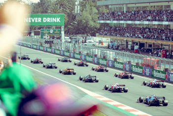

As corridas

Os primórdios da Fórmula 1 remontam à década de 1920, quando várias corridas de carros de grande prêmio foram organizadas na Europa. No entanto, foi apenas em 1946 que a Federação Internacional do Automóvel (FIA) assumiu a responsabilidade de criar uma nova competição internacional que se tornaria a Fórmula 1.
A ideia era reunir todos os Grande Prêmios (GP) da Europa, que já aconteciam em países como Inglaterra, França, Itália, Mônaco, Suíça e Bélgica, e criar um campeonato unificado, com o objetivo de estabelecer um conjunto de regras e regulamentos que permitissem uma competição justa entre as equipes, ao mesmo tempo em que dá liberdade para os engenheiros focarem nos detalhes e diferenciais de suas máquinas.
O nome foi escolhido para representar a “fórmula” que todas as equipes devem seguir para construir seus carros. Isso significa respeitar alguns critérios obrigatórios com relação ao tipo de motor, a quantidade de cilindros e o tamanho do automóvel, por exemplo.
A Fórmula 1, a principal categoria de automobilismo mundial, teve sua origem formal em 1950. A Federação Internacional de Automobilismo (FIA) organizou o primeiro campeonato mundial de pilotos, com o intuito de unificar diversas corridas de Grande Prêmio que já ocorriam na Europa.
O primeiro campeonato de Fórmula 1 contou com sete corridas, incluindo o famoso Grande Prêmio de Mônaco, e teve início no circuito de Silverstone, no Reino Unido, em 13 de maio de 1950. O italiano Giuseppe Farina, pilotando um Alfa Romeo, sagrou-se o primeiro campeão mundial de Fórmula 1.
Nos primeiros anos, a Fórmula 1 era dominada por equipes como Alfa Romeo, Ferrari, e Maserati. Os carros eram muito diferentes dos modelos modernos, com motores frontais e sem a tecnologia avançada que caracteriza a Fórmula 1 atual. A segurança também era mínima, levando a muitos acidentes graves.
Ao longo dos anos, a Fórmula 1 evoluiu significativamente, tanto em termos de tecnologia quanto de segurança, tornando-se um esporte global de grande prestígio e popularidade.